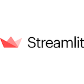
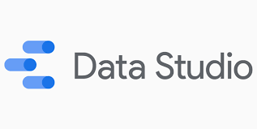
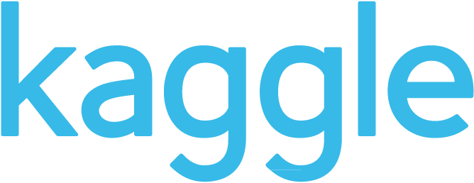
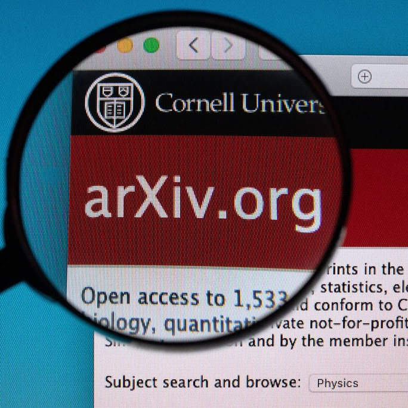

Projects
Sometimes I develop small projects to try and test tools and other stuff.
I hope to show some of them on this page where you can find both a description and the related code.
Webapps with Streamlit App Repository
Last Update: 26/08/2020

Some months ago I discovered Streamlit. I found many reviews on Medium and few colleagues seemed enthusiastic but I only tried it recently. It's amazing!
Streamlit’s open-source app framework is the easiest way for data scientists and machine learning engineers to create beautiful, performant apps in only a few hours! All in pure Python. All for free.
(from Streamlit.io)
I tried to develop a simple webapp to upload small datasets as .csv files and explore them. The webapp has been deployed on Heroku.
Image Picking Repository
Last Update: 20/09/2020
I really like Windows Spotlight Wallpapers. Then, I built an algorithm to automatically pick them (just the ones I probably like).
Good opportunity to experiment and practice with Tensorflow, transfer learning, etc.
The code is on GitHub. Maybe few changes in the next future.
Immuni Open Data Dashboard
Last Update: 7/11/2020

I decided to play a bit with Immuni Open Data to understand how Google Data Studio works. Here is the result!
Pro: easy to use, perfect combo for easy reporting from Google sheet and other data sources
Contro: too simple for complex use cases, missing few functions, some not obvious limitations
Work in Progress
Riiid Challange on Kaggle Kaggle
 Can we predict student's future scores from their previous performances? We are trying to do it on Kaggle.
ArXiv Dataset on Kaggle GitHub
 Arxiv has recently added its dataset on Kaggle. I have decided to recover a project I started in December 2019 to experiment with Neo4j. This time I will practice with more tasks. The old code is on github.